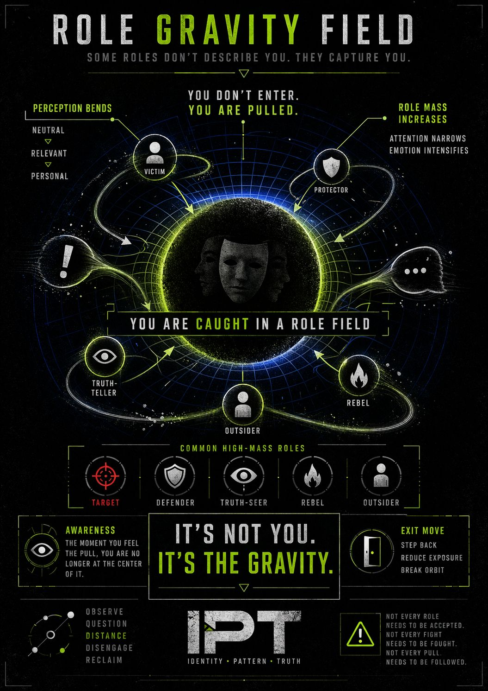

ROLE GRAVITY
(Why some identities pull harder than others)
You don’t just take on roles.
Some roles take on you.
Not all identities weigh the same.
Some are light:
Easy to enter.
Easy to leave.
Others?
They carry mass.
These don’t just describe you…
👉 they anchor you.
Once a high-mass role activates:
Everything starts bending toward the role.
Neutral events?
👉 now they’re relevant
Unrelated signals?
👉 now they’re connected
Opposition?
👉 now it’s personal
Because the role reorganizes perception.
You’re not pretending.
You’re experiencing through a filter that feels complete.
👉 The role doesn’t feel like a role
👉 It feels like truth
Once inside:
So the system stabilizes itself:
👉 defend
👉 reinforce
👉 repeat
Most conflicts aren’t:
“Who is right?”
They’re:
👉 “Which role is active… and how much mass does it have?”
The shift happens when you catch it mid-pull:
“Wait…
is this me choosing this role…”
“…or am I being pulled into it?”
That question alone:
🧠 reduces the gravity
🧠 widens perception
🧠 restores movement
You don’t need to destroy roles.
You just need to stop confusing:
🎭 temporary positioning
with
🧍 permanent identity
🎯 Some roles don’t describe you.
They capture you.